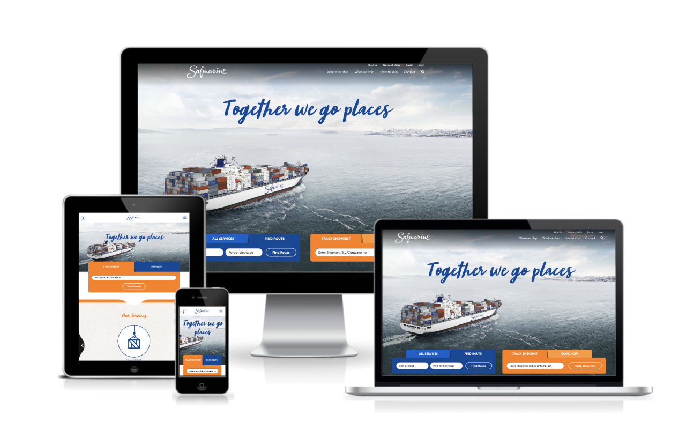
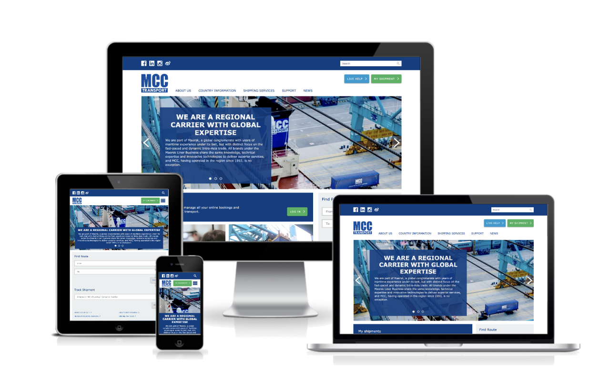

New websites for Maersk Line brands
- Date:
- Jan 2015 - Aug 2016
- Role:
- Lead UI Web Developer
- Scope:
- Update multiple websites for Maersk Line's subsidiary brands, Safmarine, MCC transport, Seago Line, and SeaLand. Due to multinational nature of the project the websites need to work on the latest phones as well as legacy browsers
- Lead the creation of a library of reusable UI components that gave consistency across multiple brands whilst making them flexible to retain the brands own identity
- Provided UI consultancy and estimation effort to colleagues and stakeholders
- Assisted with UX and UI design to help deliver projects on time
- Defined UI standards based on industry best practice and feedback from other designers and developers
- Guided developers of various disciplines (UI, Java, .Net) on front-end development best practices
- Regularly liaised with senior stakeholders and external agencies to gather feedback and present recent work
- Facilitated the team in Scrum as Scrum Master. Tasks included setting up the sprint rhythm organising, organising daily standups and scrum meetings: planning, backlog grooming, review and retrospectives

